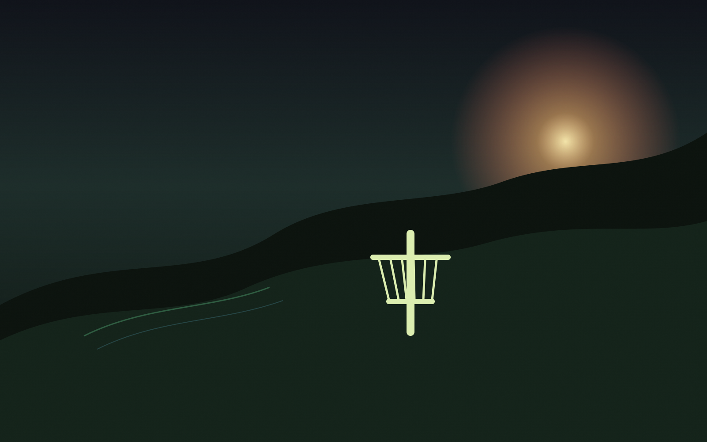

02
12 HOLUR • PÚTTVÖLLUR

9 vellir. Eitt kerfi. Veldu völl og farðu beint í það sem skiptir máli.

Kort, brautir, upplýsingar og myndir.
Þú nefndir Guðmundarás. Ég fann ekki staðfestan völl með því nafni, en Guðmundarlundur í Kópavogi er staðfestur völlur og er nú kominn með fulla síðu.